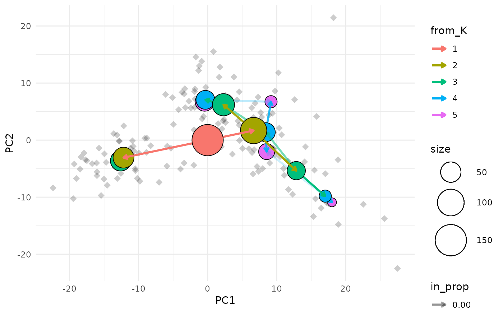

Creates a plot of a clustering tree overlaid on a scatter plot of individual samples.
clustree_overlay(x, ...) # S3 method for matrix clustree_overlay( x, prefix, metadata, x_value, y_value, suffix = NULL, count_filter = 0, prop_filter = 0.1, node_colour = prefix, node_colour_aggr = NULL, node_size = "size", node_size_aggr = NULL, node_size_range = c(4, 15), node_alpha = 1, node_alpha_aggr = NULL, edge_width = 1, use_colour = c("edges", "points"), alt_colour = "black", point_size = 3, point_alpha = 0.2, point_shape = 18, label_nodes = FALSE, label_size = 3, plot_sides = FALSE, side_point_jitter = 0.45, side_point_offset = 1, ... ) # S3 method for data.frame clustree_overlay(x, prefix, ...) # S3 method for SingleCellExperiment clustree_overlay( x, prefix, x_value, y_value, exprs = "counts", red_dim = NULL, ... ) # S3 method for seurat clustree_overlay( x, x_value, y_value, prefix = "res.", exprs = c("data", "raw.data", "scale.data"), red_dim = NULL, ... ) # S3 method for Seurat clustree_overlay( x, x_value, y_value, prefix = paste0(assay, "_snn_res."), exprs = c("data", "counts", "scale.data"), red_dim = NULL, assay = NULL, ... )
| x | object containing clustering data |
|---|---|
| ... | extra parameters passed to other methods |
| prefix | string indicating columns containing clustering information |
| metadata | data.frame containing metadata on each sample that can be used as node aesthetics |
| x_value | numeric metadata column to use as the x axis |
| y_value | numeric metadata column to use as the y axis |
| suffix | string at the end of column names containing clustering information |
| count_filter | count threshold for filtering edges in the clustering graph |
| prop_filter | in proportion threshold for filtering edges in the clustering graph |
| node_colour | either a value indicating a colour to use for all nodes or the name of a metadata column to colour nodes by |
| node_colour_aggr | if |
| node_size | either a numeric value giving the size of all nodes or the name of a metadata column to use for node sizes |
| node_size_aggr | if |
| node_size_range | numeric vector of length two giving the maximum and minimum point size for plotting nodes |
| node_alpha | either a numeric value giving the alpha of all nodes or the name of a metadata column to use for node transparency |
| node_alpha_aggr | if |
| edge_width | numeric value giving the width of plotted edges |
| use_colour | one of "edges" or "points" specifying which element to apply the colour aesthetic to |
| alt_colour | colour value to be used for edges or points (whichever is
NOT given by |
| point_size | numeric value giving the size of sample points |
| point_alpha | numeric value giving the alpha of sample points |
| point_shape | numeric value giving the shape of sample points |
| label_nodes | logical value indicating whether to add labels to clustering graph nodes |
| label_size | numeric value giving the size of node labels is
|
| plot_sides | logical value indicating whether to produce side on plots |
| side_point_jitter | numeric value giving the y-direction spread of points in side plots |
| side_point_offset | numeric value giving the y-direction offset for points in side plots |
| exprs | source of gene expression information to use as node aesthetics,
for |
| red_dim | dimensionality reduction to use as a source for x_value and y_value |
| assay | name of assay to pull expression and clustering data from for
|
a ggplot object if plot_sides is FALSE or a list of ggplot
objects if plot_sides is TRUE
Data sources
Plotting a clustering tree requires information about which cluster each
sample has been assigned to at different resolutions. This information can
be supplied in various forms, as a matrix, data.frame or more specialised
object. In all cases the object provided must contain numeric columns with
the naming structure PXS where P is a prefix indicating that the column
contains clustering information, X is a numeric value indicating the
clustering resolution and S is any additional suffix to be removed. For
SingleCellExperiment objects this information must be in the colData slot
and for Seurat objects it must be in the meta.data slot. For all objects
except matrices any additional columns can be used as aesthetics.
Filtering
Edges in the graph can be filtered by adjusting the count_filter and
prop_filter parameters. The count_filter removes any edges that represent
less than that number of samples, while the prop_filter removes edges that
represent less than that proportion of cells in the node it points towards.
Node aesthetics
The aesthetics of the plotted nodes can be controlled in various ways. By
default the colour indicates the clustering resolution, the size indicates
the number of samples in that cluster and the transparency is set to 100%.
Each of these can be set to a specific value or linked to a supplied metadata
column. For a SingleCellExperiment or Seurat object the names of genes
can also be used. If a metadata column is used than an aggregation function
must also be supplied to combine the samples in each cluster. This function
must take a vector of values and return a single value.
Colour aesthetic
The colour aesthetic can be applied to either edges or sample points by
setting use_colour. If "edges" is selected edges will be coloured according
to the clustering resolution they originate at. If "points" is selected they
will be coloured according to the cluster they are assigned to at the highest
resolution.
Dimensionality reductions
For SingleCellExperiment and Seurat objects precomputed dimensionality
reductions can be used for x or y aesthetics. To do so red_dim must be set
to the name of a dimensionality reduction in reducedDimNames(x) (for a
SingleCellExperiment) or x@dr (for a Seurat object). x_value and
y_value can then be set to red_dimX when red_dim matches the red_dim
argument and X is the column of the dimensionality reduction to use.
